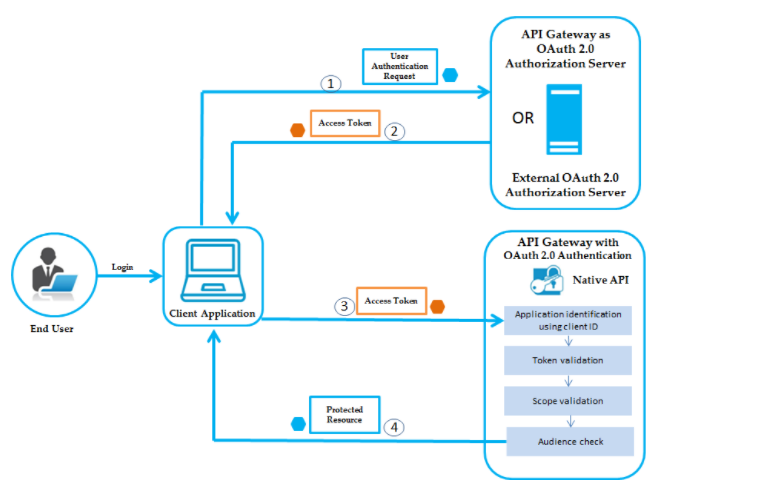

Authentication - Authorization
- Authentication - Authorization
- Oauth2
- JWT
Authentication - Authorization
Concepts
-
Authentication-Xác thực: là một quá trình kiểm tra danh tính của một tài khoản đang vào trong hệ thống hiện tại thông qua một hệ thống xác thực. Đây được xem là bước ban đầu của mọi hệ thống có yếu tố người dùng. Bản chất của Authentication chính là thực hiện xác nhậnHTTP requestđược gửi đến từ client. -
Authorization-Ủy quyền: là quá trình để xác định xem người dùng đã được xác thực có quyền truy cập vào các tài nguyên nào của hệ thống. Thườn là bước tiếp theo sau khi bước xác thực user thành công.

Classification of Authentication:HTTP Basic Authentication: Client sẽ gửi info được mã hóa dưới dạng Base64 trong header của request.Multi - factor Authentication (MFA): Xác thực đa nhân tố, tăng tính xác thưc + bảo mật:Security token,Biometric verification.Password - based Authentication: xác thực dựa trên mật khẩu: strong password, hashed password, OTP, PIN
Authentication vs. Authorization
| Authentication | Authorization |
|---|---|
| Bạn là ai? → Xác nhận danh tính, cấp quyền truy cập vào hệ thống | Bạn có những quyền gì? → Xác định xem bạn có được phép truy cập tài nguyên không |
| Bước đầu tiên | Diễn ra sau khi authentication thành công |
Trả về lỗi 401 |
Trả về lỗi 403 |
| Dùng password, OTP, PIN, 2FA/MFA, ... | Dùng tùy thuộc vào mức độ bảo mật, để xác định permissions, thường là JWT |
Transmits info thông qua ID Token |
Transmits info thông qua Access Token |
Thường được quản trị bởi giao thức OpenID Connect (OIDC) |
Thường được quản trị bởi OAuth 2.0 framework |
4 Most Used REST API Authentication Methods
HTTP Authentication Schemes (Basic & Bearer)
Giao thức HTTP cung cấp các Authentication Schemes như: Basic, Bearer, Digest, OAuth v. v...
-
Basic Authentication: Client sẽ gửi username, password được mã hóa dưới dạng Base64 trong header của request. -
Baear Authentication: "Cấp quyền truy cập cho user mang (bearer) token này".Bearer tokensẽ cho phép truy cập đến một số tài nguyên hoặc url nhất định và thường là một chuỗi string được mã hóa, sinh ra bởi server trong lần response cái request login. -
Api Keys -
API Keysbổ sung các vấn đề xác thực củaHTTP Authentication. Trong phương pháp này, một key:api-keyduy nhất được tạo ra và assigned cho mỗi user trong lần đầu tiên access tới API. Giá trịapi-keythường được tạo từ sự kết hợp phần cứng và dữ liệu user-agent, IP của user.
-
OAuth (2.0) -
OAuth2kết hợpAuthenticationvàAuthorizationđể cho phép kiểm soát danh tính, phạm vi truy cập của người dùng hợp lệ phức tạp hơn. -
Có các phiên bản OAuth 1.0 và 1.0a, phức tạp hơn so với OAuth 2.0. Thay đổi lớn trong phiên bản 2.0 là không còn bắt buộc cái
hashed-keytrong mỗi lần request nữa, thay vào đó dùng:-
access token: Được gửi giống nhưapi-key, cho phép ứng dụng truy cập vào dữ liệu của người dùng,có thể hết hạn. -
refresh token: Để lấy một token mới, nếuaccess tokenhết hạn.
-
-
OpenID Connect -
OpenID Connectlà một tiêu chuẩn mở và là một giao thức Authentication phân cấp, Cho phép user có thể được authen bởi nhiều website sử dụng service của bên thứ 3 → Giảm được việc phải thiết lập riêng logic sign-up/login cho mỗi website, cho phép các user có thể login tới nhiều webstie ko hề liên quan tới nhau mà ko cần phải có những định danh và password riêng cho mỗi site. -
Cơ chế OpenID, dùng duy nhất
identity providertừ bên thứ 3, hoặc server chuyên auth để quản lý password, vàprovidernày sẽconfirm identitycủa user tới các website, ko có một website nào có thể biết được password củauser→ yếu tố bảo mật rất cao. -
Trong cơ chế
OpenID Connect, khi provider thứ 3 hoặc authentication server xác thực user thành công, nó sẽ trả về cho client một cáitokenđể client dùng cáitokennày gửi kèm với các request trong header tới server, server sẽ giải mãtokennày và biết được user đó có những permission gì, từ đó serve chuẩn. → dùngJWT
Oauth2
- OAuth là viết tắt của Open với Authentication hoặc Authorization, là sự kết hợp giữa kết hợp
AuthenticationvàAuthorization. - OAuth 2.0 - là một giao thức cho phép người dùng có thể cấp quyền truy cập ứng dụng hoặc trang web của bên thứ ba vào các tài nguyên được bảo vệ của của họ mà không nhất thiết phải tiết lộ thông tin đăng nhập hoặc thậm chí danh tính của họ.
1. Roles
Trong OAuth2 định nghĩa 4 vai trò:
-
Resource owner(or the End User): Là những user có khả năng cấp quyền truy cập, chủ sở hữu của tài nguyên mà ứng dụng muốn lấy. -
Resource server(or API Gateway): Nơi lưu trữ các tài nguyên, có khả năng xử lý các request truy cập đến các tài nguyên được bảo vệ. -
Client Application(or the Client): Là những ứng dụng bên thứ 3 muốn truy cập vào phần tài nguyên được chia sẻ với tư cách của người sở hữu (resource owner) và trước khi truy cập ứng dụng cần đượcsự ủy quyền của user. -
Authorization server: Làm nhiệm vụ xác thực, kiểm tra thông tin mà user gửi đến từ đó cấp quyền truy cập cho ứng dụng bằng việc sinh ra cácaccess token. Đôi khiauthorization servercũng chính làresource server.
2. Authorization Grant Types
-
Khi
Client Applicationyêu cầu ủy quyền để truy cập vàoResource Serverthông quaResource owner. NếuResource ownerủy quyền cho yêu cầu trên, Application sẽ nhận đượcgiấy ủy quyền-Authorization Granttừ phíaResource owner. Có 4 loạiAuthorization Grant:-
Authorization Code: Đây là loạigiấy ủy quyềnđược sử dụng như là mộtaccess tokens(và optional làrefresh token). Thường được sử dụng với các server-side Application. Tối ưu hóa choconfidential clients. -
Implicit: Được sử dụng với các Mobile App (ứng dụng chạy trên thiết bị của User) hoặc Web App (có thể hiểu là Browser App, vd Chrome Extension). Tối ưu hóa chopublic clients. -
Client Credentials:Sử dụng với các ứng dụng truy cập thông qua API. Tối ưu hóa choclient-only authentication -
Resource Owner Password Credentials: Sử dụng với các Trusted Application, kiểu như những ứng dụng về Security. Khi đóResource Ownercó mối quan hệ tin cậy vớiClient ApplicationvàClient Applicationcó khả năng lấy thông tin đăng nhập củaResource Owner.
-
3. API Gateway
-
API Gatewaycó thể coi là một cổng trung gian, cổng vào duy nhất tới hệ thốngmicroservices, khi đóAPI Gatewaysẽ nhận các requests từ phía client,xác thựcvàđiều hướngchúng đến các API cụ thể trên các behavior services. -
API Gatewaycó thể được sử dụng như mộtAuthorization servervà mộtResource server.
a. API Gateway as a Resource Server
- Khi
API Gatewayđóng vai trò là mộtResource server, nó lưu trữ cácprotected resources, đồng thời tiếp nhận và phản hồi các yêu cầu củaClient Applicationtrong đó bao gồm mãaccess token.Client Applicationsẽ gửiaccess tokentrong Header của Request với cái field làAuthorizationsử dụngBearer authentication scheme. Sau đóResource servertiến hành xác thựcaccess token, nếuaccess tokenhợp lệ thìClient Applicationcó quyền truy cậpprotected resources, nếu không hợp lệ, cái request sẽ bị rejects.
b. API Gateway as an Authorization Server
- Khi
API Gatewayhoạt động như mộtAuthorization Server, nó sẽ nhận các yêu cầu ủy quyền từClient Applicationvà xử lý các tương tác giữaClient Application,Resource servervàResource ownerđể approve cho cái request ủy quyền đó. -
Cụ thể:
API Gatewaysẽ cấp 1access tokencho cácClient Applicationthay mặt choResource ownerđể sử dụng trong việc xác thực các lệnh gọi API tớiResource server.Resource servertiếp nhậnaccess tokentừ phíaClient Applicationvà xét:-
Nếu
Client Applicationđược phép truy cậpprotected resources,Resource serversẽ thực thi cái request này. VàAuthorization Server, khi này đang làAPI Gatewaysẽ giữ lại thông tin về cácaccess tokenmà nó phát hành, bao gồm cả thông tin người dùng (Resource owner). KhiResource ownerxuất trìnhaccess tokenchoResource server,Resource serversẽ gửiaccess tokenđếnAuthorization Serverđể đảm bảo rằngaccess tokenhợp lệ và cái khả năng service cho cái request này nằm trongscopecủaaccess token.Scopelà định nghĩa của các tài nguyên màClient Applicationcó thể truy cập thay mặt choResource owner. -
Nếu
Client Applicationkhông có quyền truy cập tài nguyên,Resource serversẽ từ chối yêu cầu.
4. OAuth 2.0 Workflow
Workflow của OAuth 2.0 thông qua 4 bước, được mô tả như sau:
-

- End-user đăng nhập,
Client Applicationgửi yêu cầu xác thực ( kèmid token) đến máy chủ ủy quyền để lấyaccess token. Authorization Serverxác thực yêu cầu và tạoaccess tokenchoClient ApplicationClient Applicationsử dụngaccess tokennày để gửi các yêu cầu HTTP đếnAPI Gateway.API Gatewaysau đó thực hiện như sau: a. Xác định danh tính củaClient ApplicationbằngclientId. b. Tiến hành verify cáiaccess token(locally hoặc remotely) c. Kiểm tra xem tài nguyên được yêu cầu trong cái request thuộcscopecủaaccess tokenhay không. d.Kiểm tra các đối tượng đi kèm trong request.
Nếu tất cả những điều trên được xác thực, API Gateway sẽ cung cấp quyền truy cập vào protected resources. Trong trường hợp access token hết hạn, Authorization Server sẽ trả về phản hồi lỗi cụ thể. Sau đó, ứng dụng khách có thể sử dụng refresh token để yêu cầu một access token mới. Authorization Server sẽ trả về access token mới để tiếp tục dùng cho việc truy cập protected resources.
JWT
1. Concepts
JSON Web Token (JWT) is an open standard (RFC 7519) that defines a compact and self-contained way
for securely transmitting information between parties as a JSON object. This information can be verified
and trusted because it is digitally signed. JWTs can be signed using a secret (with the HMAC algorithm)
or a public/private key pair using RSA or ECDSA.
-
JWT-JSON Web Tokenlà một tiêu chuẩn mở dựa trênJSON (RFC 7519), phương tiện đại diện cho mộttập hợp thông tinđược truyền một cáchan toàngiữa client-server dưới dạngJSON object. -
Tập hợp thông tin này được đại diện bởi JWT và nó
được xác minh,bảo mậtvàđáng tin cậyvì nó đượcdigitally signed. -
digitally signedbằng cách sử dụng mộtsecret-key(đối với thuật toán HMAC) hoặcpublic/private key pairdùng chuẩn RSA hoặc ECDSA.
Tóm lại là:
-
Dùng để truyền thông tin một cách an toàn.
-
Có phần chữ ký nên đảm bảo dữ liệu không bị thay đổi, chỉnh sửa trên đường đi.
2. JWT Structure
Một JWT sẽ có cấu trúc kiểu:
-
Header: Gồm có 2 phần là: loại mã token, và thuật toán được sử dụng để sinh ra phầnSignature. 2 phần này được define như là 1 json object và sau đó, JSON này được mã hóa Base64Url để tạo thành phần đầu tiên của JWT. -
Payload: Chứa cácclaims.Claimsthường chứa các thuộc tính nhưtypically,thông tin uservà các dữ liệu bổ sung. Có 3 loại claims:registered,public, vàprivateclaims. Danh sách đầy đủ cácClaimsxem tại JSON Web Token Claims. Phần này cũng được định nghĩa và mã hóa tương tựHeader. -
Signature: Một chuỗi được mã hóa bởiheader,payloadcùng với thuật toán mã hóa được chỉ định trong header.Signatuređược sử dụng để xác minh data trongpayloadkhông bị thay đổi trong quá trình đi từ client-server và trong trường hợp token đượcsignbằngprivate key, nó cũng có thể xác minh được danh tính của người gửiJWT.
API Gateway & JWT Usecase
-
API Gatewaysử dụng JWT dựa trênRSAđể cung cấp khả năng bảo vệ mạnh mẽ hơn choJWTkhiAPI Gatewaylà nhà phát hànhtoken. -
JWT chứa 1 hoặc nhiều
claimsnằm trongPayloadcủa JWT. -
API Gatewaytrích xuất các yêu cầu từJWT, định danh cho application và sau đó cho phép application truy cập vàoprotected resources.
JWT Authorization Workflow
Workflow giữa requests và responses được ủy quyền, giữa end-user, client-app, nơi phát hành JWT và resource server như được mô tả trong hình sau:

-
End-userđăng nhập,Client appgửi yêu cầu xác thực đến API Gateway hoặc đến bất kỳ bên thứ ba nào để lấy mãJWT. -
Nếu thông tin đăng nhập của
End-userđược gửi từClient apphợp lệ, API Gateway sẽ tạo mãJWTbằng các logic, thuật toán sẽ tìm hiểu bên dưới và gửiJWTđã tạo đếnClient app. Nếu thông tin xác thực của người dùng không hợp lệ,API Gatewaytrả về một phản hồi lỗi cụ thể. -
Client appgửiJWTđã tạo chứa trongHeadercủarequestheader dưới dạngHTTP Bearer Authorization tokenđể truy cập tớiprotected resourcesđược bảo vệ trong API Gateway. -
API Gatewaysẽ xác thựcclient-apptrước, dựa trên thông tin lấy từ JWT, sau đó xác thực JWT bằng các thuật toán, logic và cung cấp quyền truy cập vào cácprotected resources. Nếu xác thực không thành công, API Gateway trả về phản hồi lỗi cụ thể.